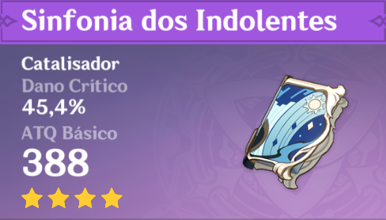

| Catalisadores |
Imagem |
Passiva |
Como obter |
| Atlas Celestial |
 |
Nuvens Vagantes Aumenta o bônus DMG elementar em 12%. Os ataques de ataque normal
têm 50% de chance de ganhar o favor das nuvens. que procura ativamente oponentes próximos para
atacar por 15s, distribuindo 160% ATQ DMG. Só pode ocorrer uma vez a cada 30s
|
Oração do mochileiro
|
Sinfonia dos Indolentes |

|
AberturaQuando um personagem entra em campo, ele ganha uma música-tema aleatória por
10s. Isso só pode ocorrer uma vez a cada 30s.
Recitativo: ATQ é aumentado em 60%.
Ária: Aumenta todo Dano Elemental em 48%.
Interlúdio: Proficiência Elemental é aumentado em 240.
|
Oração do mochileiro
|
| Codex de Favonius |

|
Companhia do VentoOs acertos de CRIT têm 60% de chance de gerar uma pequena
quantidade de Partículas Elementais, que irão regenerar 6 de Energia para o personagem. Só pode
ocorrer uma vez a cada 12 s.
|
Oração do mochileiro
|